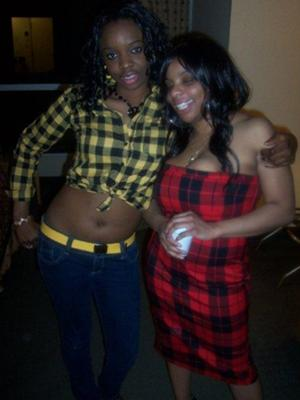

12 tips to help you lose weight - NHS
2021.06.21 13:19

Skip to main content Menu
Menu Close menu
Home Health A-Z Live Well Mental health Care and support Pregnancy NHS services Home Live Well Healthy weightBack to Healthy weight
12 tips to help you lose weight - Healthy weight
Secondary navigation
You and your weight Weight facts Hidden causes of weight gain 9 medical reasons for putting on weight How can I speed up my metabolism? The truth about carbs Counting calories Understanding calories Very low calorie diets Calorie checker Find out your BMI Weight loss support NHS weight loss guide Start the NHS weight loss plan Sign up for weight loss email support How much weight do you need to lose? 12 tips to help you lose weight Non-food rewards for losing weight How to lose weight How to diet Start losing weight Top diets review 10 weight loss myths Keep weight off Should you lose weight fast? How your GP can help you lose weight How to lose weight in a wheelchair Managing weight with a learning disability Overweight children The National Child Measurement Programme Overweight children aged 2 to 5 What can I do if my child is overweight? What can I do if my child is very overweight? Safe weight gain Underweight adults Underweight adults Keeping your weight up in later life Underweight teens Underweight teen boys Underweight teen girls Supporting someone with an eating disorder Underweight children Underweight children aged 2 to 5 Underweight children aged 6 to 12 Advice for parents of healthy-weight children Credit:Get off to the best possible start on the NHS weight loss plan with these 12 diet and exercise tips.
1. Do not skip breakfast
Skipping breakfast will not help you lose weight. You could miss out on essential nutrients and you may end up snacking more throughout the day because you feel hungry.
Check out healthy breakfast recipes
2. Eat regular meals
Eating at regular times during the day helps burn calories at a faster rate. It also reduces the temptation to snack on foods high in fat and sugar.
Find out more about eating heathily
3. Eat plenty of fruit and veg
Fruit and veg are low in calories and fat, and high in fibre – 3 essential ingredients for successful weight loss. They also contain plenty of vitamins and minerals.
Read up on getting your 5 A Day
4. Get more active
Being active is key to losing weight and keeping it off. As well as providing lots of health benefits , exercise can help burn off the excess calories you cannot lose through diet alone.
Find an activity you enjoy and are able to fit into your routine.
5. Drink plenty of water
People sometimes confuse thirst with hunger. You can end up consuming extra calories when a glass of water is really what you need.
Read more about drinking water as part of a heathly diet
6. Eat high fibre foods
Foods containing lots of fibre can help keep you feeling full, which is perfect for losing weight. Fibre is only found in food from plants, such as fruit and veg , oats, wholegrain bread, brown rice and pasta , and beans, peas and lentils .
7. Read food labels
Knowing how to read food labels can help you choose healthier options. Use the calorie information to work out how a particular food fits into your daily calorie allowance on the weight loss plan.
Find out more about reading food labels
8. Use a smaller plate
Using smaller plates can help you eat smaller portions. By using smaller plates and bowls, you may be able to gradually get used to eating smaller portions without going hungry. It takes about 20 minutes for the stomach to tell the brain it's full, so eat slowly and stop eating before you feel full.
9. Do not ban foods
Do not ban any foods from your weight loss plan, especially the ones you like. Banning foods will only make you crave them more. There's no reason you cannot enjoy the occasional treat as long as you stay within your daily calorie allowance .
10. Do not stock junk food
To avoid temptation, do not stock junk food – such as chocolate, biscuits, crisps and sweet fizzy drinks – at home. Instead, opt for healthy snacks, such as fruit, unsalted rice cakes, oat cakes, unsalted or unsweetened popcorn, and fruit juice.
11. Cut down on alcohol
A standard glass of wine can contain as many calories as a piece of chocolate. Over time, drinking too much can easily contribute to weight gain.
Find out more about the calories in alcohol
12. Plan your meals
Try to plan your breakfast, lunch, dinner and snacks for the week, making sure you stick to your calorie allowance. You may find it helpful to make a weekly shopping list.
Page last reviewed: 29 November 2019
Next review due: 29 November 2022
Support links
NHS sites About us Contact us Profile editor login Site map Accessibility statement Our policies Cookies© Crown copyright
- 12 tips to help you lose weight - NHS
- How to Lose Weight | CSIRO Total Wellbeing Diet
- Intermittent fasting may not be the best way to lose weight .
- How to Lose Weight Fast - Quick & Easy Weight Loss Tips
- Top 25 Ways To Lose Weight Fast At Home (Expert's Guide .
- 12 tips to help you lose weight - NHS
- How to Lose Weight Fast — The Truth About Dropping Up to 5 .
- How to Lose Weight – Top 18 Simple Tips – Diet Doctor
- The best way to lose weight boils down to these three things
- The best way to lose weight boils down to these 5 principles
- 12 tips to help you lose weight - NHS
- How to Lose Weight | CSIRO Total Wellbeing Diet
- Intermittent fasting may not be the best way to lose weight .
· - How to Lose Weight Fast - Quick & Easy Weight Loss Tips
- Top 25 Ways To Lose Weight Fast At Home (Expert's Guide .
- 12 tips to help you lose weight - NHS
- How to Lose Weight Fast — The Truth About Dropping Up to 5 .
- How to Lose Weight – Top 18 Simple Tips – Diet Doctor
- The best way to lose weight boils down to these three things
8 janv. 2021 — - The best way to lose weight boils down to these 5 principles
·
8 janv. 2021 —
